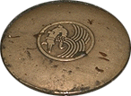
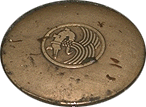

|  路上のプレート |
 市場の看板 |
 これもどこかの看板 |
紀元前３０年前後にローマ人によってひらかれ、ラテン語でNemaunus(泉）と呼ばれてきたニームは、今もガール県の県庁所在地として活気が あり、フランス人の言葉でいえばシックを失っていない街である。ここは「古都ニーム」といわれる通り、ローマ時代の雰囲気が街中に漂っている。鎖につながれたワニが街のシンボルマーク。ワニはエジプトをあらわし鎖はエジプトの征服をあらわす。そもそもニームはローマがエジプトを征服したアクチウムの闘いに参加したローマ兵に与えられた土地らしく当時の貨幣にすでにこの紋章を使っている。
|  路上のプレート |
市場の看板 |
これもどこかの看板 |